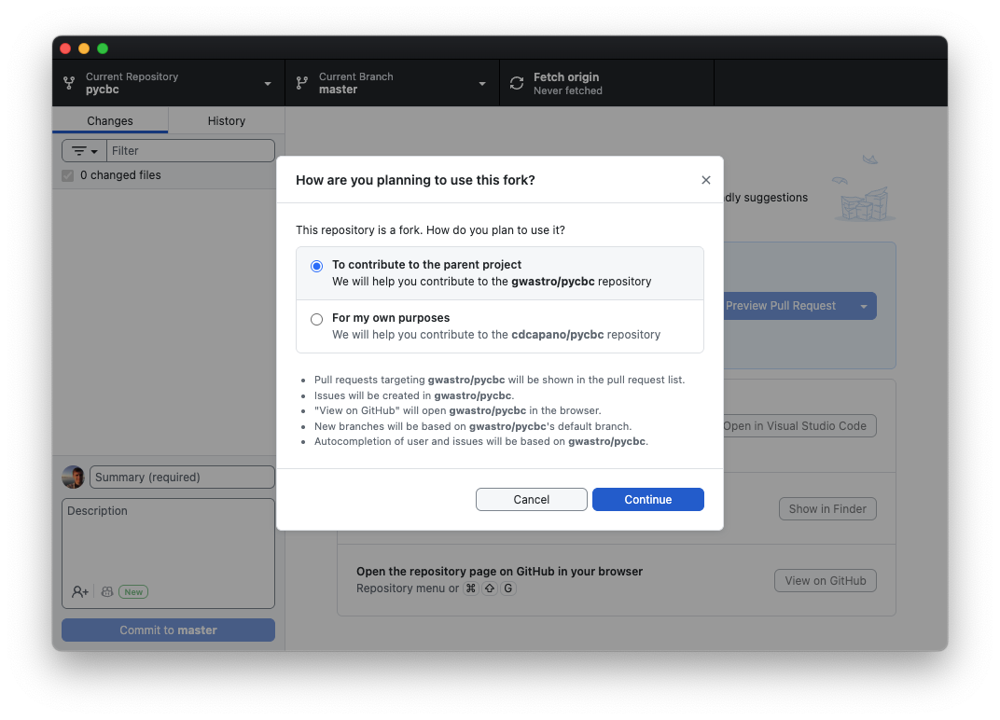

2026-10-06
Each step can be done with GitHub Desktop or with git on the command line: use the tabs below to switch between the two.
In exercise 2, we saw how to create a GitHub repository and how to push changes to it. We created this repo and were the only ones to modify it. It is already useful to track our personal projects using Git and GitHub, but the strength of these tools is also to facilitate collaborative coding.
In this exercise, we will see how to collaborate with others using GitHub. You will work with a partner to contribute to the test repository they created on GitHub in exercise 2 (and they will do the same with your repository!).
First, find a partner to work with. Get the URL of the test repository they created in Exercise 2. The URL should be something like https://github.com/THEIR_USERNAME/THEIR_REPO_NAME where THEIR_USERNAME is your partner’s GitHub username and THEIR_REPO_NAME is the name of the repository they created in Exercise 2. Again, you are going to your partner’s repository, not your own.
Usually, in order to modify another person’s repository, we will need to fork their repository first.
A fork is a copy of another user’s GitHub repository that is stored in your account. The copy of the repository is, for all intents and purposes, an exact replica of the original repository up until this point.
From this point on, your fork is independent of the original. Changes to the original repository also won’t affect your fork unless you actively sync it by fetching. You can create a fork of any public repository on GitHub!
You might wonder: why would I fork instead of directly cloning someone else’s repository? The main reason is related to permissions. A public repository is visible to and can be cloned by everyone, but only the author and chosen collaborators can modify it! By contrast, a fork is stored under your account, meaning that you are free to make any changes that you like to, e.g. add commits or branches, without affecting the original repository.
If you have the right to directly modify the repository, either because you created it or because its creator gave you the rights to do so, then you don’t need to fork it before applying changes.
Forking a repository allows you to develop things without breaking the original repository while you do. This is incredibly useful if you want to contribute to another project that is widely used.
In summary, for a repository that you cannot directly modify:
if you just want a local copy that you know you won’t modify, for instance because you just want to explore it offline without changing anything, then cloning without forking first is enough.
if there is a chance that you will modify the clone at some point, then fork it first.
The workflow to follow if you want to suggest changes to a repository that you cannot modify directly is:
In general, you should create a new branch on your fork to store changes that you want to submit to the original repository. Making one branch per type of change you want to suggest allows you to submit multiple pull requests to the same repository.
The original repo’s owner(s) can then review your changes, and, if they accept them, merge it into their repository for widespread adoption. This is known as the fork and pull model.
The diagram below illustrates the relationship between a fork (on GitHub) and a clone:
flowchart TB
subgraph GitHub
subgraph A["userA/repo"]
direction LR
A1[main] ~~~ A2[dev1] ~~~ A3[...]
end
gap[" "]:::spacer
subgraph B["userB/repo"]
direction LR
B1[main] ~~~ B2[br1] ~~~ B3[...]
end
end
subgraph CA["userA's computer"]
LA["userA/repo"]
end
subgraph CB["userB's computer"]
subgraph LB["userB/repo"]
direction LR
LB1[main] ~~~ LB2[br1] ~~~ LB3[...]
end
end
A -- clone --> LA
B -- clone --> LB
classDef userA stroke:#8a00c2,stroke-width:2px
classDef userB stroke:#7ab648,stroke-width:2px
class A,LA userA
class B,LB userB
classDef spacer fill:none,stroke:none
You should now be on your partner’s GitHub repository.
Click the Fork button in the upper right of their website. This will open the “Create a new fork” page.
On the “Create a new fork” page:
YOUR_USERNAME / THEIR_REPO_NAME.Now click the green Create fork button in the lower right. This will create a “fork” of your partner’s repository under your own GitHub account. You will be redirected to your fork. Note the URL at the top of the webpage: it should be something like https://github.com/YOUR_USERNAME/THEIR_REPO_NAME.
You want to contribute a new development to your partner’s repository. To do so, first clone your fork of their repository to your local computer:
If you are not already there, go to your fork’s website on GitHub. The web address should be something like https://github.com/YOUR_USERNAME/THEIR_REPO_NAME.
On your fork’s website, click the green <> Code button, then “Open with GitHub Desktop” to clone your fork to your computer.
This will open a new window in GitHub Desktop that asks how you’re planning to use the fork:

Select the “To contribute to the parent project” option then click “Continue”.
What’s the difference between “To contribute to the parent project” or “For my own purposes”?
The first option means that when you click buttons like “View on GitHub” you will see the original repository on GitHub, not your fork of the repository. Likewise, when you open pull requests through GitHub Desktop, the default will be to open a pull request page on the original repository’s main branch, not your fork’s main branch.
In the “for my own purposes” case, clicking “View on GitHub” or opening pull requests will default to viewing / opening PRs on your fork.
In either case, the “origin” repository is your fork. This means that when you create a branch and push changes to GitHub, they will go to your fork. The options here just relate to what the default action is when viewing on GitHub and opening PRs.
More often then not, you will want to file Pull Requests and base new branches off of the main branch of the original repository, not your fork. For this reason, we suggest selecting the first option, “To contribute to the parent project.” Again, this only affects defaults; you have the same functionality in either case. You can also change this at any time by Repository -> Repository Settings -> Fork Behavior in the menu bar.
Now let’s create a branch called dev2 to add a new feature to the mymath.R file. Create the branch on your local computer using GitHub Desktop. (Refer to Exercise 1 if you forgot how.)
You want to contribute a new development to your partner’s repository. To do so, first clone your fork of their repository to your local computer:
If you are not already there, go to your fork’s website on GitHub. The web address should be something like https://github.com/YOUR_USERNAME/THEIR_REPO_NAME.
On your fork’s website, click the green <> Code button, select the “HTTPS” tab, and copy the URL. It should be something like https://github.com/YOUR_USERNAME/THEIR_REPO_NAME.git.
In your terminal, cd to the folder where you want to store your fork, then clone it and move into it:
where REPO_URL is the URL you copied.
Run git remote -v: note that origin is your fork on GitHub, not your partner’s repository. When you create a branch and push changes to GitHub, they will go to your fork.
Now let’s create a branch called dev2 to add a new feature to the mymath.R file. Create the branch on your local computer and switch to it:
Use your text editor to open mymath.R and add the following lines to it:
Save the changes.
Commit your changes using GitHub Desktop.
This commit (and the dev2 branch) currently only exists on your local copy of your fork. To push it to your fork on GitHub, click the “Publish branch” button on GitHub Desktop.
After you publish the branch, the “Create Pull Request” button will appear in GitHub Desktop. Open a PR by clicking it. (Alternatively, click the View on GitHub button to open the original repository in your web browser. You should see the “Compare & pull request” green button at the top of the website.)
Commit your changes:
This commit (and the dev2 branch) currently only exists on your local copy of your fork. Push it to your fork on GitHub:
Since dev2 doesn’t exist on your fork yet, -u origin dev2 tells git to create it there and to make your local dev2 track it.
Go to your partner’s repository in your web browser. You should see the “Compare & pull request” green button at the top of the website. Click it to open a PR.
Note that in the gray box at the top of the comparing changes page the “base” repository is your partner’s original repository and the base branch is their main branch. This means that you will create a Pull Request on your partner’s repository, and that it will be for merging your changes onto their main branch. You want that!
Fill out the description box if you like and/or change the “Add a title” box. Then click the green Create pull request button at the bottom.
After you click Create pull request, your partner will see a Pull Request pop up on the GitHub website for their repository. Have them click on the “Pull Requests” tab at the very top of their website, then click on the pull request.
Your partner can review your pull request on their GitHub website. If they are satisfied with it, have them click the green button at the bottom of the page, then Confirm (do a Squash and Merge!), to merge the pull request.
Congratulations! You and your partner have now collaborated on a new feature.
main branch will update with your new commit. The main branch of your fork will now be out of sync with theirs. To sync it, go to to your GitHub website for your fork (the one with URL https://github.com/YOUR_USERNAME/THEIR_REPO_NAME). You should see a gray dialog box at the top that starts with “This branch is 1 commit behind …”. Click the Sync fork button, then the green Update branch button. This will update your fork’s main branch to be the same as your partner’s.Update your local copy of your fork. Go to GitHub Desktop and click “Fetch origin”. Now switch to your main branch and click “Pull origin” button to pull in the changes.
Now that your changes have been merged on to your partner’s main branch and you’ve synced your fork both on GitHub and your computer, you’re free to delete your development branch on your computer using GitHub Desktop.
Update your local copy of your fork. Switch to your main branch and pull in the changes:
Syncing from the command line
Instead of using the “Sync fork” button, you can register your partner’s repository as a second remote, conventionally called upstream, pull its changes, and push them to your fork:
You only need to add upstream once.
Now that your changes have been merged on to your partner’s main branch and you’ve synced your fork both on GitHub and your computer, you’re free to delete your development branch on your computer: